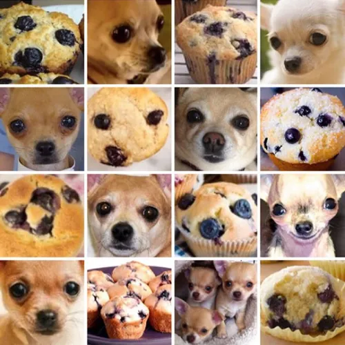
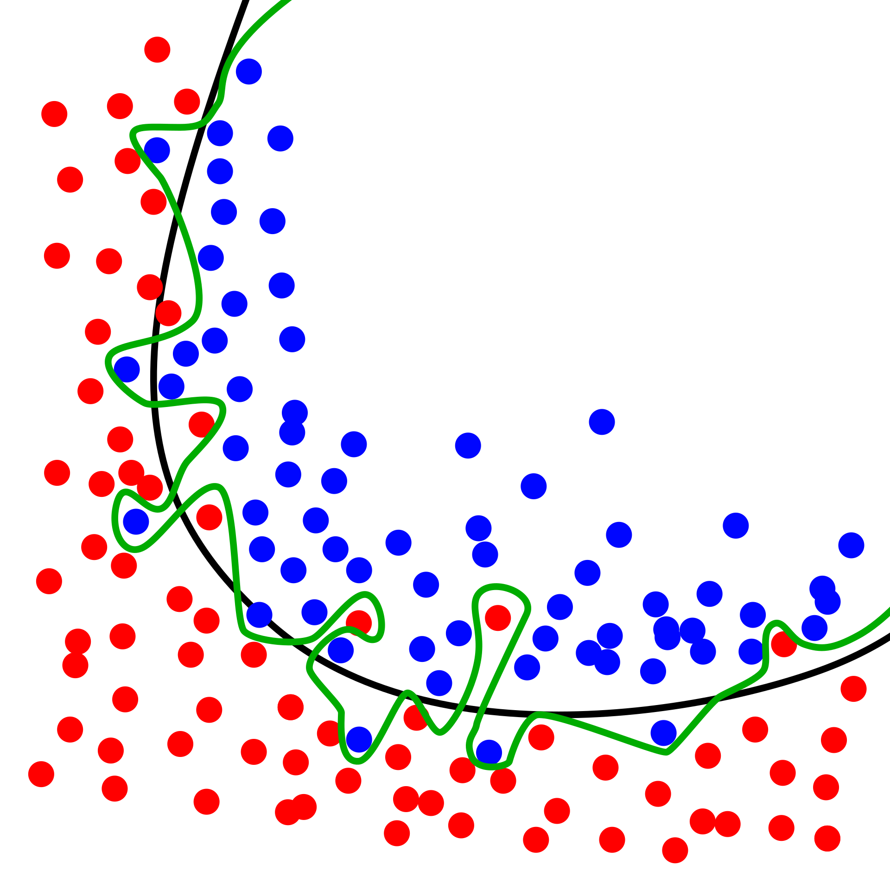

Automatic differentiation and neural networks
In this lecture we are going to look at the algorithms that underlie the training of neural networks, which are the dominant model in the field of machine learning.
1 Background
At a very high level a neural network is just a complicated function with a lot of parameters — so really a family of functions — into which data can be passed. “Data” in this case could be anything: in popular applications in machine learning it could represent images (represented as pixel values), text (represented as strings), audio signals (represented as a time series), and so on. From now on just regard data as a big vector \(\mathbf{x}\in\mathbb{R}^{N_D}\), where \(N_D\) is the dimensionality of the data (e.g. number of pixels in an image, \(\times 3\) if it’s colour and there are three RGB values). In a common setting — called supervised learning — the purpose of this function is to map the data \(\mathbf{x}\) to some output \(\mathbf{y}\) that represents a set of labels that correspond (for example) to the different kinds of objects that might appear in the images. Denoting the function by \(\mathsf{NN}_\theta\), where \(\theta\) represents the parameters, we have:
\[ \mathbf{y} = \mathsf{NN}_\theta(\mathbf{x}) \]
Different choices of \(\theta\) give different functions. The idea is that if our family of functions is “big enough” then somewhere in that family will be a function that does a “good job”. In the previous sentence “big enough” is a somewhat vague idea that implies both a large number of parameters and a variety of functions accessible by varying them. “Good job” is a bit less vague: it means that if we try out our function on a set of data where the labels already exist (normally because a human as labelled them, either voluntarily or because they are confronted with reCAPTCHA), the answer will be correct most of the time. The process of finding the “right” \(\theta\) is called training the neural network. Since making a correct prediction can be quantified, training is really a matter of optimizing an appropriate function of the output \(\mathbf{y}\), so techniques of optimization can be applied.
I should say at the outset that the conceptual ideas behind the training of neural networks are not particularly deep, with the possible exception of the backpropagation algorithm that we will describe here. What has made for the revolutionary success of this approach — essentially putting all other forms of machine learning (e.g. symbolic) out of business 1 — is:
- The free availability of large datasets of labelled data.
- The free availability of open source languages, libraries, and models.
- The
freewide availability of the necessary computing power to train models.
1.1 The cost function
Let’s discuss the idea of training as optimization in a bit more detail. We suppose that we have a large dataset of size \(N\) that consists of data \(\mathbf{x}_i=1,\ldots N\) together with labels \(l_i\). The first step is to encode our labels in vectors \(\mathbf{y}_i\) that can be compared with the output of the neural network. A popular choice is one hot encoding. \(\mathbf{y}_i\) is an \(N_L\) dimensional vector, where \(N_L\) is the number of labels, and label \(n\) is encoded as \((0,0,\ldots, 1, \ldots, 0)\), with the \(1\) in the \(n\)th place.
We would like to train the network (choose the parameters \(\theta\)) so that \(\mathsf{NN}_\theta(\mathbf{x}_i)\) is close to the corresponding \(\mathbf{y}_i\) that represents the label. In order to quantify this we introduce a cost or loss function that quantifies the difference. A simple example is the quadratic cost
\[ \mathcal{C}(\theta) = \frac{1}{2N}\sum_{i=1}^N \lVert\mathbf{y}_i-\mathsf{NN}_\theta(\mathbf{x}_i)\rVert^2. \tag{1}\]
In other words, we use the usual square norm in \(\mathbb{R}^{N_L}\) of the distance between the network output and encoded label. Note also that we average over the training data, because sometimes our network may not perform so well, confusing different labels:

The idea is now to minimize \(\mathcal{C}(\theta)\) over the parameters of the network. The rest of this lecture concerns the practicalities of how this is done. When it comes to using the model for identifying previously unseen data, we need a procedure for turning the output \(\mathsf{NN}_\theta(\mathbf{x})\) — an \(N_L\) dimensional vector — into a discrete label. If the network has been defined so that the components of the output are non-negative, and recalling that the labels were encoded as one hot vectors, the simplest way to do this is to find the maximum component and make the prediction that the corresponding label is the correct one. This is written as
\[ l_* = \underset{l}{\operatorname{argmax}} \left[\mathsf{NN}_\theta(\mathbf{x})\right]_l. \]
When evaluating the performance of a machine learning model there is a standard protocol that involves splitting the dataset into training set and a test set, where the former is used for training the model and the latter for evaluating it. After training the model it should perform well on the training set, but will generally perform less well on the test set, which contains data that the model has never seen. The difference between the cost function evaluated on the test set and the training set is a measure of how well the model generalizes to new inputs and is known as the generalization error.
A particular risk when using large neural networks with many parameters is the problem of overfitting. A sufficiently flexible model is capable of effectively “memorizing” the dataset, without “understanding” the labelling, leading to poor generalization.

A particularly vivid example appears in Zhang et al. (2021). They showed that popular computer vision models can be trained on randomly labelled data (where the labels have no connection to the image) to achieve perfect accuracy on the training set. Of course, the resulting performance on the test set was no better than random guessing. This is a natural consequence of overparameterization — having more parameters than data points in your training data — and shows that much of the success in training models with good generalization is down to the details of how the training is done (for example, by stopping before the training error gets too low).
1.2 Gradient descent
Leaving these questions aside, the basic idea underlying training is an extremely simple algorithm called gradient descent. If our network \(\mathsf{NN}_\theta\) is designed appropriately, our cost function Equation 1 is a differentiable function of the parameters \(\theta\). The minimum cost that we seek therefore corresponds to a stationary point where \(\nabla_\theta \mathcal{C}(\theta)|_{\theta_*}=0\). The idea of gradient descent is to take steps “downhill” i.e. in the direction \(-\mathcal{C}(\theta)\) in the high dimensional space of all the parameters, where each step corresponds to an update of the parameters according to
\[ \theta_i\longrightarrow \theta'_i = \theta_i - \eta \frac{\partial\mathcal{C}}{\partial \theta_i} \tag{2}\]
where \(\eta\) is a hyperparameter2 called the learning rate. Choosing the learning rate is an important part of the craft of training models: too large and the first order approximation underlying Equation 2 breaks down and the cost may end up increasing; too small and the network will take too long to train. Often a learning rate schedule is used where the rate is adjusted during training to optimize convergence. You might guess that starting off with a large learning rate and then reducing it is the right way to go, and this is correct, but people do all sort of exotic things.
You might find it surprising that such a simple approach plays such an important role in machine learning. All of the sophistication lies in how the model is defined (Section 1.3) and how the gradients are calculated (Section 2): for a complicated function with many parameters 3 this is a highly nontrivial task. While there are plenty of more sophisticated optimization methods they often involve more information about the model’s dependence on its parameters, and this is more costly to evaluate. For example Newton’s method — which you may have encountered before — requires knowledge of first and second derivatives at each step, and this is normally less practical.
Another issue that relates to scale concerns the definition of our cost function Equation 1 as an average over the dataset. For large datasets consisting of high dimensional data (e.g. images) it is usually not practical to calculate the gradient of the cost using the entire dataset. The usual procedure is then to split the data up into batches (usually called minibatches, confusingly), and perform each step of gradient descent by evaluating the gradient only on the batch, moving on to a new batch at the next step. Eventually this will lead to all the data in the dataset being used, which is usually known as one epoch of training. Training a model can involve many epochs (passes through the dataset).
Because each step only uses part of the data, the gradients calculated are going to be more “noisy” than the “true” gradients involving the whole dataset. Because of this, training by gradient descent with minibatches is known as stochastic gradient descent. It is generally thought that the noise introduced by minibatching plays a role in improving the generalization performance of neural networks.
1.3 The network
So far we have said nothing at all about \(\mathsf{NN}_\theta\) except that it is a function \(\mathsf{NN}_\theta:\mathbb{R}^{N_D}\longrightarrow \mathbb{R}^{N_L}\) from the space of data to the space of labels, and it has lots of parameters. What is this function, and why is it called a “neural network”? In this section we’ll define \(\mathsf{NN}_\theta\) and say something about the origins of the idea in neuroscience.
Leaving biology aside for the moment, we know that \(\mathsf{NN}_\theta\) must be complicated. We want it to take high dimensional inputs and somehow interpret them, outputting a label which synthesizes lots of high-level features in the data (e.g. in images the network must detect edges, shapes, and their relation). How can we make a complicated function?
The answer is that we do it by composing lots of simpler functions
\[ \mathsf{NN}_\theta = f_\theta^{(L)} \circ f_\theta^{(L-1)} \cdots \circ f_\theta^{(2)} \circ f_\theta^{(1)} \tag{3}\]
The function \(f^{(1)}\) is a map \(f^{(1)}:\mathbb{R}^{N_D}\longrightarrow \mathbb{R}^{h_{1}}\), where \(h_1\) is usually called the width of the first hidden layer (we’ll shortly draw a picture to show where this terminology comes from). \(f^{(j)}\) are maps \(f^{(j)}:\mathbb{R}^{h_{j-1}}\longrightarrow \mathbb{R}^{h_{j}}\) for \(j=2, \ldots L-1\), and finally the output layer is \(f^{(L)}:\mathbb{R}^{h_{L-1}}\longrightarrow \mathbb{R}^{N_L}\). The dimensions \(h_j\) are hyperparameters of the model.
We now have to define the intermediate functions \(f^{(j)}\). Although we have said they should be simple, we still want to allow the possibility that each of the output components depends on all of the input components. The usual recipe is
\[ \left[f(\mathbf{x})\right]_\alpha = \phi\left(\sum_{\beta=1}^{N_\text{in}} w_{\alpha\beta}x_\beta + b_\alpha\right),\qquad \alpha = 1,\ldots N_\text{out} \tag{4}\]
Here the matrix \(w\in \mathbb{R}^{N_\text{out}\times N_\text{in}}\) contains the weights and the vector \(\mathbf{b}\in\mathbb{R}^{N_\text{out}}\) contains the biases. These are the parameters of (this layer of) the network and will be modified during training. The function \(\phi:\mathbb{R}\longrightarrow\mathbb{R}\) is called the activation function. There are several popular choices, including the sigmoid
\[ \sigma(x) = \frac{1}{1+e^{-x}}, \]
probably more familiar to you as the Fermi-Dirac distribution, and the ReLU function \(\max(0,x)\) 4.
Equation 4 is sometimes written more compactly as
\[ f(\mathbf{x}) = \phi(w\cdot\mathbf{x} + \mathbf{b}). \]
You should understand this expression in the sense of vectorized functions (like NumPy’s ufuncs): \(\phi()\) is applied to each element of \(w\cdot\mathbf{x} + \mathbf{b}\).
Activation functions should be differentiable but nonlinear. A linear function would mean that the function compositions in Equation 3 collapse into matrix multiplications, producing a single overall weight matrix and bias vector. There wouldn’t be any point having separate functions: one would do the same job.
The result of composing functions like this many times, each with their own set of weights and biases, is a highly complex function. The term deep learning, which you will often here these days in the context of neural networks, refers to models with many function applications, or layers, which is the source of the networks’ expressiveness.

The network that we have described so far is called fully connected, because in Equation 4 the matrix of weights means that every input dimension is coupled to every output dimension. Most of the innovation in neural networks over the past decade has been in creating and refining architectures that exploit the structure of the data in some way. For example, in a network to be used for computer vision (image recognition), it makes sense that the model “knows” that two input pixels are near or far from each other. This means that the input dimensions corresponding to two nearby pixels should be treated differently at the outset (i.e. before training) than two separated pixels. Also, the way the network responds to an image should not be strongly dependent on translations of that image. This implies that the weight matrices \(w\) should have some structure to them. In the case of vision this lead to the convolutional neural network, where the \(w\)’s act like convolutions, exploiting translational invariance but still retaining many parameters. We won’t go any further into these different architectures in this lecture.
1.3.1 Why neural?
You may still be wondering where the network is, let alone the neurons. I’ve decide to present the neural network model in an ahistorical way, but if you look at other presentations you will tend to see the function Equation 4 represented graphically as

which reflects the dependence of the output on the inputs (and not much else). The result of composing several such functions then looks like this:

This is the network we have been talking about all along! Specifically, it is a network called a directed acylic graph (DAG), meaning that the connections have a direction to them (input to output) and there are no loops.
Neural networks have long been used as a model for what goes on in the brain, with Figure 1 playing the role of the neuron. There are many differences, however, including the absence of any particular role for time5, and the fact that (real) neural networks are not DAGs! This latter property plays a decisive role in the training of artificial neural networks, as we’ll see in the next section. In general, I feel that neural networks have outgrown their biological inspiration, which is the reason I’ve downplayed it here.
2 Automatic differentiation and backpropagation
The ingredients we have assembled so far are:
- The cost function: \[ \mathcal{C}(\theta) = \frac{1}{2N}\sum_{i=1}^N \lVert\mathbf{y}_i-\mathsf{NN}_\theta(\mathbf{x}_i)\rVert^2 \]
- Training by gradient descent: \[ \theta_i\longrightarrow \theta'_i = \theta_i - \eta \frac{\partial\mathcal{C}}{\partial \theta_i} \]
- A neural network expressed as a composition of functions: \[ \mathsf{NN}_\theta = f_\theta^{(L)} \circ f_\theta^{(L-1)} \cdots \circ f_\theta^{(2)} \circ f_\theta^{(1)} \tag{5}\]
In order to perform a gradient step in training a neural network we have to calculate the gradients \(\partial\mathcal{C}/\partial \theta_i\). In this section we are going to see how the structure in Equation 5 allows these gradients to be calculated efficiently, using an algorithm called backpropagation.
Backpropagation is an example of automatic differentiation (AD): the algorithmic evaluation of derivatives of a function. When people first hear about AD they sometimes guess that it must be something like this
\[ \frac{\partial\mathcal{C}}{\partial \theta_i} \approx \frac{\mathcal{C}(\theta_i+\Delta\theta_i)- \mathcal{C}(\theta_i)}{\Delta \theta_i} \tag{6}\]
i.e. the numerical evaluation of a derivative. This is called numerical differentiation and it’s what you would be forced to do if you only had access to \(\mathcal{C}(\theta)\) as a black box function: one you can evaluate but otherwise have no knowledge of. AD is a different beast altogether: it uses knowledge about how the function \(\mathcal{C}\) is formed by composing many simpler functions, together with the (analytic) derivatives of those functions, to find the overall gradient.
As well as being a bit more elegant than the brute force approach, there is another reason why AD is preferred over the (conceptually simpler) approach Equation 6. That approach would require us to vary each of the parameters in the network separately: think of those 175 billion parameters of ChatGPT! AD uses the network structure to simplify things drastically, as we’ll now see.
2.1 Evaluating the derivatives
Let’s just plow on and evaluate \(\partial\mathcal{C}/\partial \theta_i\). Remember that the parameters are the set of weights and biases in each layer:
\[ \theta = (w^{(1)}, \mathbf{b}^{(1)},\ldots, w^{(L)}, \mathbf{b}^{(L)}). \]
The function \(\mathsf{NN}_\theta\) can therefore more precisely be written as
\[ \mathsf{NN}_\theta = f_{w^{(L)}, \mathbf{b}^{(L)}}^{(L)} \circ f_{w^{(L-1)}, \mathbf{b}^{(L-1)}}^{(L-1)} \cdots \circ f_{w^{(2)}, \mathbf{b}^{(2)}}^{(2)} \circ f_{w^{(1)}, \mathbf{b}^{(1)}}^{(1)}. \tag{7}\]
Evaluating the derivative with respect to weights and biases in layer \(l\) is therefore going to involve applying the chain rule to Equation 7. In the following we’re going to denote the input to the \(l\)th layer as
\[ \mathbf{z}^{(l)} \equiv w^{(l)} \cdot \mathbf{x}^{(l)} + \mathbf{b}^{(l)} \]
and the output as \(\mathbf{a}^{(l)}\) (“a” for activation). Thus the layer is written in vectorized form as
\[ \mathbf{a}^{(l)} = \phi(\mathbf{z}^{(l)}). \]
Let’s evaluate the derivative of \(\mathsf{NN}_\theta(\mathbf{x})\) with some fixed input with respect to the biases \(\mathbf{b}^{(l)}\) in the \(l\)th layer. One thing to note in passing is that the cost functions we consider are simple sums (averages) over different data \(\mathbf{x}_i\), so the derivatives are too.
A straightforward application of the chain rule gives
\[ \frac{\partial \mathsf{NN}_\theta(\mathbf{x})}{\partial \mathbf{b}^{(l)}} = \frac{\partial f^{(L)}}{\partial \mathbf{x}^{(L)}}\cdot \frac{\partial f^{(L-1)}}{\partial \mathbf{x}^{(L-1)}} \cdots \frac{\partial f^{(l)}}{\partial \mathbf{z}^{(l)}} \tag{8}\]
because \(d\mathbf{z}^{(l)}=d\mathbf{b}^{(l)}\). In this expression
\[ \frac{\partial f_j^{(l')}}{\partial x_k^{(l')}} = \phi'(z^{(l')}_j)w^{(l')}_{jk} \qquad l'=l+1,\ldots L \tag{9}\]
is the Jacobian matrix of each layer and the final factor is
\[ \frac{\partial f_j^{(l)}}{\partial z_k^{(l)}} = \phi'(z^{(l)}_j)\delta_{jk}. \]
We find a similar expression for the derivative with respect to the weights in the \(l\)th layer. These expressions all involve the deriviative of the activation function. When AD is implemented in code, the definition of any function is always supplemented with the derivative of that function.
In Equation 8 the matrices are composed by matrix multiplication. How should they be evaluated? There are two possibilities:
2.2 Forward accumulation
We go from right to left. Starting from the input \(\mathbf{x}\), we evaluate \(\mathbf{z}^{(l)}\) by evaluating the first \(l-1\) functions, passing the output from each to the input of the next. Once we reach \(f^{(l)}\), we have to start keeping track of a matrix as well as the values \(\mathbf{z}^{(l')}\). This matrix is initialized with components \(\phi'(\mathbf{z}^{(l)})\delta_{jk}\). It is then acted on by each of the Jacobians in Equation 9 until we get to the final layer. This procedure is called forward accumulation.
The advantage of forward accumulation is that during evaluation we only have to store the current \(\mathbf{z}^{(l')}\) and the corresponding matrix. The disadvantage is that we are dealing with matrix multiplication. For matrices \(M_1\in \mathbb{R}^{N_1\times N_2}\) and \(M_2\in \mathbb{R}^{N_2\times N_3}\) matrix multiplication \(M_1\cdot M_2\) is \(O(N_1 N_2 N_3)\). Since we are interested in models with large numbers of parameters in each layer, this is a problem.
2.3 Backpropagation
The alternative is that we go from left to right. Instantly we see a problem: we have to have evaluate and store all the \(\mathbf{z}^{(l')}\) with \(l'=1,\ldots L\) before we can do anything, as the Jacobians depend on these values. This is called the forward pass.
Now remember that we’re actually interested in calculating \(\partial\mathcal{C}/\partial w^{(l)_k}\). For a single data point our cost function is
\[ C_i(\theta) \equiv \frac{1}{2}\lVert\mathbf{y}_i-\mathsf{NN}_\theta(\mathbf{x}_i)\rVert^2, \tag{10}\]
and so
\[ \frac{\partial C_i}{\partial b^{(l)}_k} = -\left(\mathbf{y_i} - \mathsf{NN}_\theta(\mathbf{x}_i)\right) \cdot \frac{\partial \mathsf{NN}_\theta(\mathbf{x_i})}{\partial b^{(l)}_k}. \]
This means that going from left to right involves only matrix-vector multiplications rather than matrix-matrix mutiplications. We start with the (row) vector \(\left(\mathbf{y_i} - \mathsf{NN}_\theta(\mathbf{x}_i)\right)^T\) and act on the right with the Jacobians. This reduces the complexity of the evaluation by a factor equal to the number of biases in the \(l\)th layer.
In AD this is known as backward accumulation. For the special case of neural networks it’s usually called backpropagation. Going backwards reduces the time complexity in favour additional space (i.e. memory) complexity, as we have to store \(\mathbf{z}^{l'}\) for each layer. This trade-off is usually worth it, and essentially all large neural networks these days are trained using backpropagation.
3 Implementation
These days, getting started with training neural networks is easy due to the availability of many libraries that implement the common building blocks of popular neural architectures, as well as the automatic differentiation required to train them by gradient descent. Popular libraries include PyTorch, TensorFlow, and Jax. As usual, you don’t have to do it yourself.
Still, it’s fun to take a look at how backpropagation is actually implemented in code. Among the simple versions of backpropgation you can find online I can recommend Nielsen (2015) and micrograd by Andrej Karpathy. He also has a YouTube video where he explains how it works in detail.
4 Further reading
There are a huge number of resources online. For a really beautiful gentle introduction try Nielsen (2015). For much more detail try Goodfellow, Bengio, and Courville (2016), though the field moves so fast that the latter parts are probably already a bit dated.
References
Footnotes
This is a slight exaggeration, but what people often do these days is augment symbolic approaches with neural approaches.↩︎
The term parameter is normally reserved for the \(\theta\)’s that appear in the definition of the model. Numbers like the learning rate that describe how the model is trained are usually referred to as hyperparameters.↩︎
GPT-3, the model from OpenAI underlying ChatGPT, has 175 billion parameters!↩︎
Note that you don’t have to use the same activation function throughout. Typically the output layer of a network used for classification uses the softmax function to output probabilities over the labels.↩︎
Spiking neural networks are a model in which time plays a more serious role.↩︎